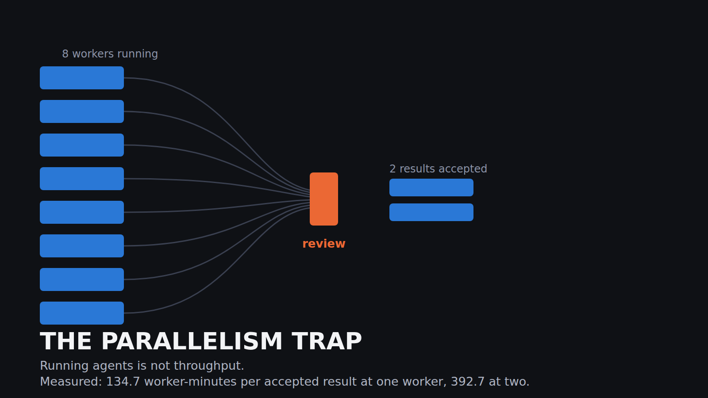
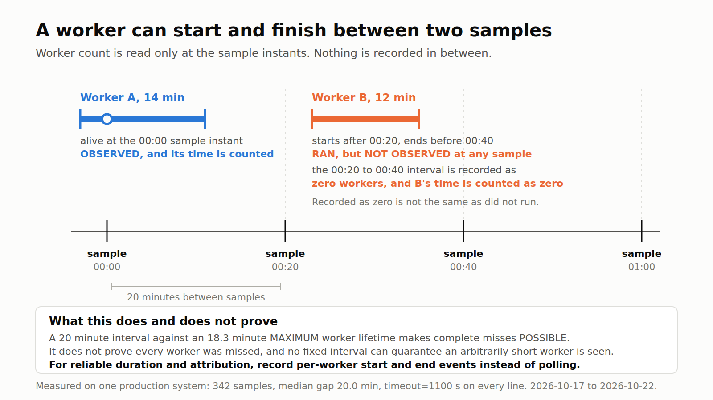
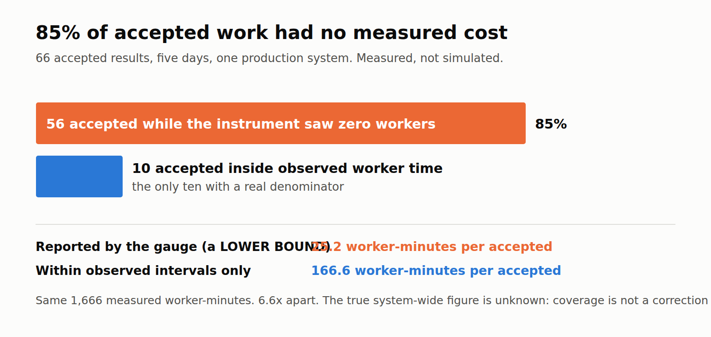
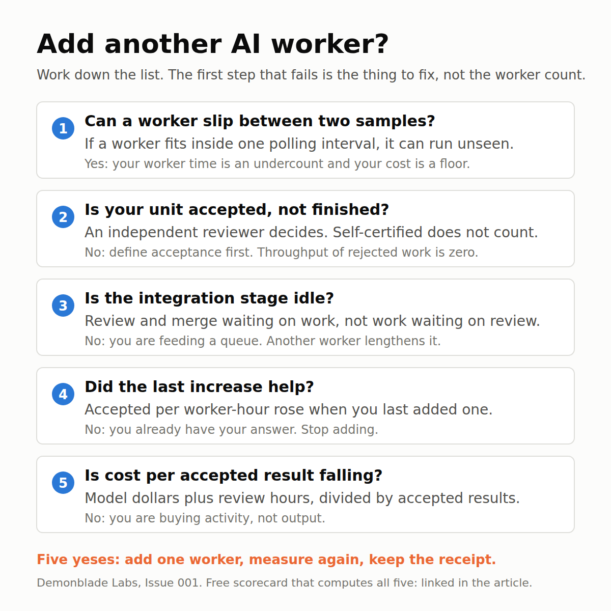

Demonblade Labs · Issue 001

Why More AI Agents Don't Automatically Mean More Output
I run an autonomous engineering system. For five days it reported 25 worker minutes per accepted result as if that were the cost. It is only a lower bound. Inside the intervals where worker time was actually observed the figure is 167, and the reason is a measurement design most agent setups share.
There is a number almost everyone running AI agents quotes, and almost nobody can defend: how much work the agents are doing.
Not how many are running. Not how many tasks they closed. How much work came out the other end, got reviewed by something that was allowed to say no, and was kept.
I have been running an autonomous engineering system on my own machine for about seven weeks. It dispatches bounded coding tasks to isolated workers, each in its own git worktree, each returning an evidence receipt that an independent reviewer either accepts or blocks. The system records its own cost per accepted result on a dashboard I read every morning. For five days that dashboard said 25 worker minutes per accepted result.
When I went back through the raw data, 85 percent of those accepted results had landed in intervals where the instrument recorded no worker time at all. Restricted to the intervals where worker time was observed, the figure is 167 minutes. The two numbers are 6.6 times apart, and the reported one is the flattering one. The true system-wide cost sits somewhere at or above 25.2 and I cannot tell you where, which is the actual problem: a gauge I steered by every morning was reporting a lower bound as if it were a measurement.
The cause is not exotic. It is polling a worker count on a timer and reconstructing worker time from it. If you are running agents and watching a dashboard, there is a good chance it is built the same way, because that is the easy way to build one.
This article is the whole thing: what I measured, how, what the numbers actually support, what they do not, and a free scorecard that computes the same figures for your own setup, including the check that catches the bug.
What you will get out of it
- A definition of throughput for agent work that survives contact with a reviewer.
- The specific measurement failure that makes agent dashboards flattering, and the check that detects it.
- Real numbers from a real system, with the uncertainty stated instead of hidden.
- A decision procedure for whether to add another worker.
- A working scorecard you can run on your own data.
Chapter 0. The number everybody gets wrong
Three different things get called throughput, and they are not the same thing.
Activity is how many workers are running. It is the easiest to measure and the least useful. A worker that is running is spending money.
Completion is how many tasks reported done. Better, and still not it. An agent reporting success is a hypothesis, not a result. In my own system the self-reported success rate and the reviewed acceptance rate are different numbers, and the gap is the whole point of having a reviewer.
Accepted output is how many tasks an independent reviewer accepted. That is the only one worth optimising, because it is the only one that corresponds to something you can keep.
So the unit is: one accepted result. And the cost of it is worker time, model spend, and the human review time that came with it.
The denominator matters just as much as the numerator, and this is where it falls apart. To say "25 worker minutes per accepted result" you need two measurements from the same window: the worker time spent, and the accepted results produced. If those two are measured by different mechanisms, nothing guarantees they cover the same work. Mine did not, and I did not notice for five days.
Chapter 1. Why more workers can make you slower
Before the measurement problem, the thing being measured.
Adding a worker to an agent system is not like adding a core to a CPU. Every extra worker adds load to shared stages that do not scale with it:
Context acquisition. Each worker has to learn the part of the codebase it is about to touch. That cost is paid per worker, not once. Two workers on adjacent files pay it twice and often learn contradictory things.
Collision and ownership. Two workers that touch the same file produce a merge problem that did not exist before. The fix is one writer per surface, which means that past a certain point extra workers have nothing uncontested left to do.
Review. This is the one that bites. Review capacity is close to fixed, because a reviewer that scales with the workers is just more unreviewed work wearing a hat. Eight workers feeding one review stage do not produce eight times the accepted output. They produce a queue.
Integration. Accepted work still has to land. Branches diverge while they wait. The longer the queue, the more likely a branch needs rework before it can merge, which sends it back to a worker and starts the cycle again.
Abandonment. Work that is never reviewed, never merged, or superseded before it lands is pure cost. In my own repository there are branches sitting at double digit dirty-file counts that will never be merged. Every minute in them was paid for.
The shape of this is a queueing system with a narrow stage in the middle, and the classic property of such systems is that the bottleneck does not move when you add capacity upstream. It gets worse, because the queue in front of it lengthens.
That is a well understood argument and I am not claiming to have discovered it. What I can add is a measurement, and an account of how hard it is to measure honestly.
Chapter 2. Inside the system, in public-safe terms
Enough of the architecture to make the numbers meaningful.
A scheduler fires on a timer. On each tick it reads the current state, decides how many bounded tasks to dispatch, and launches each one as an isolated worker with its own git worktree and its own acceptance contract. A task has a budget and a stop rule written into its brief. When a worker finishes, it writes an evidence receipt: what it changed, what tests it ran, what the output was.
A separate reviewer reads the receipt and the diff and writes a verdict file. The verdict is ACCEPTED or it is not, and a non-acceptance has to carry a demonstrated failure, not an opinion. That rule exists because reviewers that block on taste produce infinite loops.
Accepted work merges. The verdict files stay on disk as the permanent record. That record is the dataset in this article: a directory of verdict files with timestamps, and a scheduler log with one line per tick.
Two numbers from the scheduler log matter for what follows, and both are printed on every single line of it:
- The worker count at that moment.
- The task timeout: 1100 seconds, which is 18.3 minutes. No worker can live longer than that.
Chapter 3. The measurement, and the bug inside it

The window: 2026-10-17 07:47 to 2026-10-22 04:48, local time. 342 scheduler ticks. 89 verdict files written inside the window: 66 accepted, 23 not accepted. Acceptance rate 0.74.
Worker time is not logged directly. It is reconstructed, which is where the trouble starts. Each tick records the worker count at that instant. The estimate treats that count as constant until the next tick, multiplies by the gap, and sums. Over the window that gives 1,666 worker minutes. Divide by 66 accepted results and you get 25.2 worker minutes per accepted result. That is the number the dashboard reported, and the number I believed.
Now the part I missed. The scheduler ticks every 20 minutes. I checked the gaps between all 342 ticks: the median is 20.0 minutes, the shortest is 16.7. And the maximum worker lifetime, printed on every line of the same log, is 18.3 minutes.
The sampler is slower than the thing it is sampling.
A worker that starts after one tick and finishes before the next is never seen. The interval is recorded as zero workers, and every minute that worker spent is counted as zero. Recorded as zero and did not run look identical in the data.
Be careful about how strong a claim that is. 18.3 minutes is the maximum worker lifetime, not the minimum, so a 20 minute interval makes a complete miss possible; it does not prove that every short worker was missed, and some workers clearly were seen. The reverse is also worth stating plainly, because it is the trap I nearly wrote into this article: no fixed polling interval guarantees you see everything. Halving the interval to 9.2 minutes would bound misses for workers that last longer than the interval and would do nothing at all for a worker that lives 90 seconds. Polling faster narrows the hole. Only per-worker start and end events close it.
So I went back and asked a question I should have asked first: for each accepted result, what was the recorded worker count in the interval it landed in?

| Concurrent workers recorded | Wall hours | Worker minutes | Accepted | Not accepted | Worker min per accepted |
|---|---|---|---|---|---|
| 0 | 89.5 | 0 | 56 | 19 | undefined |
| 1 | 20.2 | 1,212 | 9 | 4 | 134.7 |
| 2 | 3.3 | 393 | 1 | 0 | 392.7 |
| 3 | 0.3 | 61 | 0 | 0 | undefined |
| All | 113.3 | 1,666 | 66 | 23 | 25.2 |
Fifty six of the sixty six accepted results, 85 percent of them, landed in intervals where the instrument recorded zero workers. Those results have no measured cost at all. They were divided into a pile of worker minutes they had nothing to do with.
All 1,666 measured worker minutes sit in the non-zero rows by definition, and those rows contain 10 accepted results. Restricted to the intervals where worker time was observed, the figure is 1,666 divided by 10, or 166.6 worker minutes per accepted result. The two numbers are 6.6 times apart.
Be precise about what each of those numbers is, because this is exactly where it is easy to cheat.
25.2 is a lower bound, not an estimate. Every accepted result is counted in the denominator, but the numerator is an undercount of worker time, since unobserved workers contribute zero. True worker minutes are at least 1,666, so the true cost per accepted result is at least 25.2 and could be anything above it.
166.6 is a conditional figure, not the true cost. It is the cost per accepted result within the intervals where worker time was observed, and those intervals were selected by the instrument rather than at random. It rests on 10 accepted results.
The true system-wide figure is unknown. Attribution coverage of 0.152 is not a correction factor; it is a statement that 85 percent of the output cannot be tied to any measured cost. No arithmetic on this dataset recovers the real number. What the dataset does support, firmly, is that the reported figure was a floor presented as a measurement, and the gap between it and the attributable figure is a factor of 6.6.
Why so many zero-worker intervals? Two reasons, and I can only partly separate them. Some is the aliasing above: short workers born and dead inside one 20 minute gap. Some is lag: a verdict file is written when the review is written, which can be well after the work. Both push accepted results into intervals where no worker time was recorded, and both are properties of the instrument rather than the system being measured. That is the uncomfortable part. The instrument was wrong in a way that made the system look better.
What about 1 worker versus 2?
The table hints at the thing the article is named after: 134.7 worker minutes per accepted at one worker, 392.7 at two. Nearly three times worse.
I am not going to tell you that is a result. It rests on 9 accepted results in one bucket and 1 in the other. The worker count was chosen by a governor reacting to machine load, so the two-worker periods are the busier, more contended periods by construction. Task difficulty was not held constant. Any of those could produce this on its own.
What it is: a directionally consistent observation, too small to carry weight, in a system where the mechanism that would cause it is already known to exist. The right response is not to publish it as a finding. It is to run the controlled version, which I will, and which the scorecard below is built to record.
If you came here for "15 agents are slower than 3, here is the graph", I do not have that graph and neither does anyone else I have been able to find. What I have is the measurement framework, one real dataset with its flaws exposed, and the specific instrument bug that makes most such graphs untrustworthy.
Chapter 4. Where the bottleneck actually sits
Strip the measurement problem away and look at the shape of the window.
113.3 wall hours. Workers recorded as running for 20.2 hours of it at one worker, 3.3 at two, 0.3 at three. For roughly 79 percent of the wall clock the system recorded no workers at all, and yet most of the accepted work shows up in those stretches.
Even allowing generously for unobserved workers, the picture is of a system that is not worker-bound. It is bound by what happens between dispatches: deciding what to dispatch, reviewing what came back, and merging it. Adding workers to that system buys very little, and the thing it does buy most reliably is a longer review queue.
This is the practical reason the "add more agents" instinct disappoints. High worker utilisation is not a goal. It is only good if accepted output per worker hour holds up as you add them. When the constrained stage is review or integration, the sign of improvement is not busier workers. It is the queue in front of review getting shorter.
Chapter 5. The governor, as a design pattern
If a worker is not the unit of capacity, something has to decide when work is dispatched at all. In my system that is a governor, and I am describing it here as a pattern rather than claiming a verified product.
The governor holds a small number of rules:
- Objective fidelity. A task that does not serve the current objective does not get dispatched, however good it looks. Found-it-so-build-it is how a week disappears.
- Previously accepted evidence. If a question was already answered and the answer was accepted, it is not re-opened without a demonstrated reason.
- Bounded exploration. Every task has a budget and a stop rule. Over budget is a blocked result, not a slow green one.
- Action risk classes. Reversible and in scope runs without asking. Spending money, sending something outward, or anything irreversible stops and asks a human.
- Stop and escalate. Conflict between owners, a failed safety floor, or a missing permission stops mutation and preserves state.
The honest status line: these are implemented and in use. They are not independently verified as a product, and this article is not a release announcement for them. The reason they are relevant here is that every one of them reduces the number of workers you need, which is a cheaper lever than adding workers.
Chapter 6. The scorecard you can use

The companion artifact is a single page with no dependencies, no network calls, no analytics and no storage. You can download two files and open it from your filesystem. Nothing you type leaves the page.
It does three jobs.
One: it checks your instrument before it computes anything. Enter your sampler period and the shortest worker lifetime you care about observing. It tells you whether a worker can slip between two samples, and it refuses to describe any polling interval as a guarantee. With my real numbers, a 20 minute interval and an 18.3 minute maximum lifetime, it returns:
CAN MISS WORKERS. A worker shorter than the 20 min interval can start and finish unseen. Sampling every 9.2 min would bound misses for workers longer than that interval, and still not for shorter ones. Per-worker start and end events are the only reliable fix.
Two: it scores a measurement window. Attempted, accepted, rejected, wall hours, worker hours, review hours, model cost. It returns acceptance ratio, accepted per worker hour, worker minutes per accepted, cost per accepted, integration ratio and rework share.
It also has a field most dashboards do not: accepted results that fall inside observed worker time. The ratio of that to total accepted is the attribution coverage. At coverage 1 your cost figure is sound. My window scores 0.152, and the tool flags attribution as broken, shows both figures side by side, 25.2 across all accepted results and 166.6 within observed intervals, and labels the first a lower bound rather than a result. It does not pretend the gap is a correction factor. That contrast is the single most useful thing the tool does.
Three: it compares two windows and gives a verdict. Load the measured one-worker and two-worker windows and it returns:
SCALING HURT. Accepted per worker hour 0.446 to 0.153. Change: minus 65.7 percent.
with a line underneath reminding you that a difference between two windows is not a controlled result.
Two deliberate choices in the code. Every ratio with an empty denominator returns null, never zero and never infinity, because a missing measurement and a measured zero are different facts and conflating them is how you end up with a confident wrong number. And a measured zero is a verdict: a window that produced nothing in an observed hour of worker time has told you something real.
The whole calculation core is 145 lines, 94 of them code, with 18 tests covering division by zero, missing fields, negative inputs, accepted exceeding attempted, worker hours exceeding workers times wall hours, unit conversion, the sampling-interval boundary cases and extreme values. The tests run with node --test. One of them caught a real mistake I had made in the comparison logic, where I had treated a measured zero as an absence. That is the same category of error as the one this entire article is about, which I think is the honest note to end the engineering on.
Chapter 7. How to apply this on Monday
In order, because the order matters.
1. Check whether a worker can slip between two of your samples. Compare your polling interval with the shortest worker you care about. If a worker can start and finish inside one interval, your worker time is an undercount and your cost per accepted result is a floor, not a measurement. Polling faster shrinks the hole for longer workers and never closes it for short ones.
2. Define accepted before you measure anything. Something independent of the worker has to be allowed to say no, and a rejection has to carry a demonstrated reason rather than a preference. Without that, throughput is just activity with better branding.
3. Measure worker time, do not reconstruct it. This is the real fix and it is not a faster sampler. Have each worker record its own start and end. Worker hours then become a sum of measured intervals, attribution coverage goes to 1 by construction, and the polling question disappears instead of getting smaller. I am moving to that; a faster tick is only a stopgap that reduces the hole for long workers.
4. Find the constrained stage before adding capacity. If review and integration are waiting on work, more workers help. If work is waiting on review, more workers make it worse. You can usually tell by looking at how long something sits between accepted and merged.
5. Spend on routing before spending on workers. Better task boundaries, one writer per surface, and a clear acceptance contract raise accepted output per worker hour without adding a single worker.
6. Add one worker, then measure the same window again. Not two. If accepted per worker hour falls, you have your answer, and it cost you one experiment.
The limits of all of this
The things I would attack if I were reading this.
- One system, one operator, five days. Not a benchmark. My workloads are not yours.
- The 166.6 figure rests on 10 accepted results, in intervals the instrument selected rather than a random sample. It is a conditional figure, not a replacement true value.
- The true system-wide cost per accepted result is unknown. 25.2 is a lower bound. Nothing in this dataset identifies the real number, and I am not going to pretend otherwise.
- The one versus two worker comparison is observational and tiny. Treat it as a hypothesis with a mechanism, nothing more.
- Verdict timestamps lag the work, so some of the zero-worker mass is lag rather than missed workers. This dataset cannot separate the two. Recording work start and end directly fixes both at once, and I have not done it yet.
- The acceptance standard is mine. A stricter reviewer would lower every acceptance ratio here. Throughput measured against a weak reviewer is a vanity number, and no tool can detect that for you.
- No controlled experiment yet. The protocol is: fixed task family, fixed model route, fixed reviewer, randomised worker count, at least 30 accepted results per arm. That is the next issue.
The right question
"How many agents can I run" is a question about your budget. It has an easy, expensive answer.
The question that pays is: what gets accepted, how fast, at what total cost, and with how much of my attention? Every one of those has a denominator, and a denominator you cannot defend is not a measurement.
The reason I am opening with my own broken gauge rather than a clean result is that the broken gauge is the more useful finding. Anyone can produce a chart with agent counts on one axis. Almost nobody shows you whether their instrument could see what it was counting, or whether the number on the dashboard is a measurement or a floor. Mine was a floor for five days while I read it every morning.
Check yours. The scorecard will tell you in about a minute, and if your answer is the same as mine, the fix is to stop polling and start recording.
The scorecard is free, runs offline, and is linked below with its source and tests. Next issue: the controlled version of the experiment, with the worker timing recorded properly and a protocol fixed in advance.
Open the free Accepted Agent Throughput Scorecard
Runs entirely in your browser. No signup, no network calls, no analytics, nothing stored. Source and tests: /labs/issue-001/scorecard/